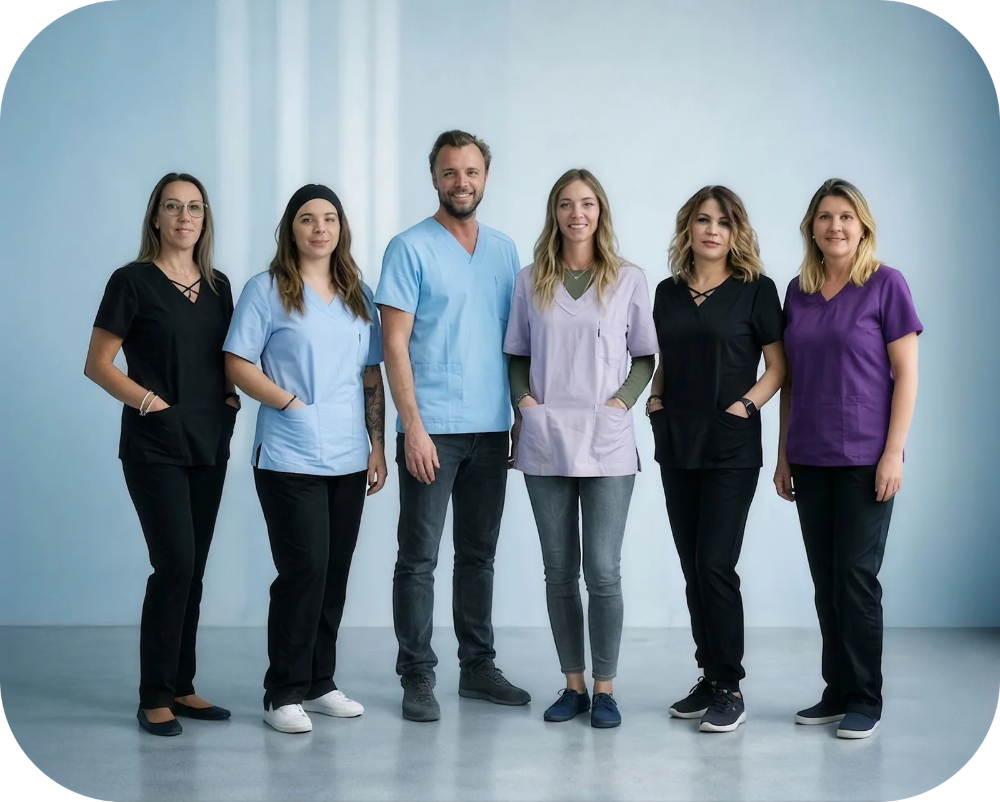

La formazione del team
Formazione e workshop aiutano a organizzare l’attività con allineatori, preparare la documentazione e accompagnare i pazienti nello studio.
Dr Renaud Desouches
Ambasciatore Blanche per Aix-en-Provence e la sua regione
Sviluppate un’attività con allineatori sotto il vostro marchio. Ad Aix-en-Provence, il Dr Renaud Desouches vi accompagna con esperienza ortodontica, formazione e supporto sui casi.
Contattare il mio ambasciatore ↗
Ortodontista ad Aix-en-Provence, il Dr Renaud Desouches riceve adulti, bambini e adolescenti nel proprio studio. Come ambasciatore Blanche, condivide la sua esperienza con i professionisti che desiderano introdurre gli allineatori nella clinica.
Con il suo team, collega la pratica quotidiana a un supporto ortodontico specialistico. Mantenete la vostra identità e la relazione con i pazienti.
Il team accoglie i pazienti e contribuisce a organizzare confronti, appuntamenti e invii. Un punto di supporto locale per lo studio e i pazienti.
Il vostro ambasciatore interviene nel quadro concordato con lo studio, dalla preparazione dei casi alle domande durante il controllo.
Formazione e workshop aiutano a organizzare l’attività con allineatori, preparare la documentazione e accompagnare i pazienti nello studio.
Il Dr Desouches discute con voi obiettivi, movimenti previsti e limiti della proposta prima della vostra validazione clinica.
Esamina con voi l’avanzamento dei casi accompagnati nei momenti concordati e aiuta a valutare difficoltà o necessità di adattamento.
Quando una situazione supera il quadro della vostra presa in carico, lo studio può offrire un riferimento per una valutazione ortodontica specialistica.
Per alcuni bambini, le necessità di correzione e le questioni di crescita richiedono un approccio ortodontico più approfondito. Altre situazioni complesse, a qualsiasi età, possono giustificare un parere specialistico.
Il Dr Desouches vi aiuta a discutere l’orientamento del caso. Se necessario, potete inviare il paziente per una visita e la valutazione di cure adatte. La scelta del trattamento dipende dall’esame clinico.
Contattare il mio ambasciatore ↗sessioni di formazione e workshop all’anno
Il Dr Desouches conduce otto sessioni annuali per professionisti e team. Gli incontri affrontano l’organizzazione del percorso, la pianificazione e le domande della pratica quotidiana.
Programma, date, disponibilità e condizioni di partecipazione vengono comunicati su richiesta.
Richiedere il programma ↗In orari concordati in anticipo, potete organizzare una videochiamata con l’ambasciatore per discutere casi specifici, preparare una decisione o fare il punto su un trattamento accompagnato.
I documenti clinici si condividono tramite il canale sicuro concordato con lo studio.
Richiedere una videochiamata ↗Presentate lo studio, l’esperienza con gli allineatori e il supporto desiderato. Il team potrà orientarvi verso una formazione, un confronto clinico o una visita specialistica.
Scrivere al Dr Desouches ↗Chiamare lo studioNel primo messaggio indicate i vostri recapiti professionali e il motivo della richiesta. Non allegate dati sanitari che identifichino un paziente.